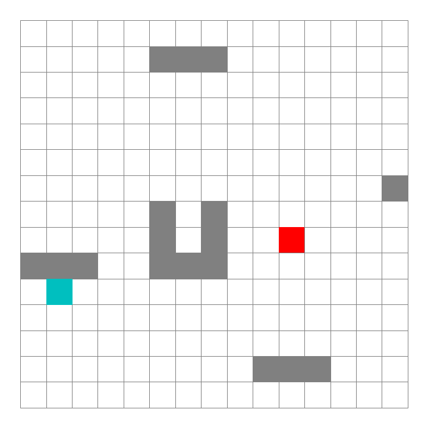
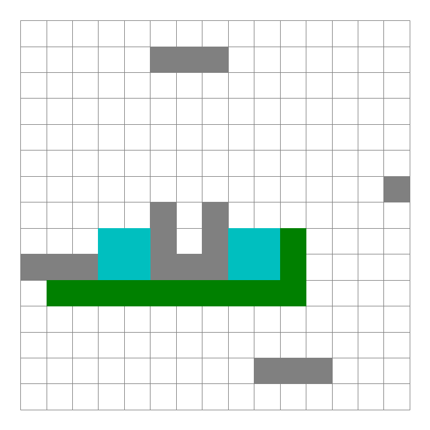

A*算法概述及其Python实现¶
A*算法是一种图形路径中寻找最短路径的算法，它属于启发式搜索算法。
概述¶
输入为：图结构 Graph
输出为：最短路
利用当前代价 \(g(n)\) + 预估代价 \(h(n)\)，即两者之和总代价 \(f(n)\) 最低值的方向进行探索。
\[
f(n) = g(n) + h(n)
\]
当前代价：从起点到当前方块的步数
预估代价：下述距离计算得出的值，也就是A*算法的启发函数
最常用的预估代价计算方式：
- 欧拉距离（Euler Distance）也就是两点直线距离，如果可以朝向任何方向移动
- 曼哈顿距离（Manhattan Distance）也就是两点在竖直方向和水平方向上的距离总和，最适合在上下左右四个方向移动
A*算法在运算过程中，每次从优先队列中选取\(f(n)\)值最小（优先级最高）的节点作为下一个待遍历的节点。

伪代码¶
- 初始化open_set和close_set；
- 将起点加入open_set中，并设置优先级为0（优先级最高）；
- 如果open_set不为空，则从open_set中选取优先级最高的节点n：
- 如果节点n为终点，则：
- 从终点开始逐步追踪parent节点，一直达到起点；
- 返回找到的结果路径，算法结束；
- 如果节点n不是终点，则：
- 将节点n从open_set中删除，并加入close_set中；
- 遍历节点n所有的邻近节点：
- 如果邻近节点m在close_set中，则：
- 跳过，选取下一个邻近节点
- 如果邻近节点m也不在open_set中，则：
- 设置节点m的parent为节点n
- 计算节点m的优先级
- 将节点m加入open_set中
流程图¶

算法实现¶
point.py
# -*- coding: utf-8 -*-
"""
@author: 俞晨聪
point.py
"""
import sys
class Point:
"""描述图中的点"""
def __init__(self, x, y):
self.x = x
self.y = y
self.g = 0
self.cost = sys.maxsize
random_map.py
# -*- coding: utf-8 -*-
"""
Created on Wed Oct 16 09:53:51 2024
@author: 俞晨聪
random_map
"""
import numpy as np
import point
class RandomMap:
def __init__(self, size=15): # 默认大小为30X30
self.size = size
self.obstacle = size//2
self.GenerateObstacle()
self.start_point = None
self.end_point = None
self.SetStartPoint()
self.SetEndPoint()
def GenerateObstacle(self):
self.obstacle_point = []
# add two fixed points in the center of the grid
self.obstacle_point.append(point.Point(self.size//2, self.size//2))
self.obstacle_point.append(point.Point(self.size//2, self.size//2-1))
# Generate an obstacle in the middle
# for i in range(self.size//2-4, self.size//2):
# self.obstacle_point.append(point.Point(i, self.size-i))
# self.obstacle_point.append(point.Point(i, self.size-i-1))
# self.obstacle_point.append(point.Point(self.size-i, i))
# self.obstacle_point.append(point.Point(self.size-i, i-1))
for i in range(self.obstacle - 1):
x = np.random.randint(0, self.size)
y = np.random.randint(0, self.size)
self.obstacle_point.append(point.Point(x, y))
if (np.random.rand() > 0.5): # Random boolean
for l in range(self.size//4):
self.obstacle_point.append(point.Point(x, y+l))
pass
else:
for l in range(self.size//4):
self.obstacle_point.append(point.Point(x+l, y))
pass
def IsObstacle(self, i, j):
for p in self.obstacle_point:
if i == p.x and j == p.y:
return True
return False
def SetStartPoint(self):
while True:
x = np.random.randint(0, self.size)
y = np.random.randint(0, self.size)
if not self.IsObstacle(x, y):
self.start_point = point.Point(x, y)
self.start_point.cost = 0
self.start_point.g = 0
break
def SetEndPoint(self):
while True:
x = np.random.randint(0, self.size)
y = np.random.randint(0, self.size)
if not self.IsObstacle(x, y) and (x, y) != (self.start_point.x, self.start_point.y):
self.end_point = point.Point(x, y)
break
a_star.py
# -*- coding: utf-8 -*-
"""
Created on Wed Oct 16 10:07:04 2024
@author: 俞晨聪
a_star
"""
import sys
import time
from matplotlib.patches import Rectangle
import point
class AStar:
def __init__(self, map):
self.map = map
self.open_set = []
self.close_set = []
self.start = map.start_point
self.end = map.end_point
def BaseCost(self, p):
"""当前代价"""
return p.g
def HeuristicCost(self, p, end):
"""预估代价，启发函数"""
x_dis = abs(p.x - end.x)
y_dis = abs(p.y - end.y)
return x_dis + y_dis
def TotalCost(self, p, s, e):
"""总代价"""
return self.BaseCost(p) + self.HeuristicCost(p, e)
def IsValidPoint(self, x, y):
"""判断点是否有效，不在地图内部或者障碍物所在点都是无效的。"""
if x < 0 or y < 0:
return False
if x >= self.map.size or y >= self.map.size:
return False
return not self.map.IsObstacle(x, y)
def IsInPointList(self, p, point_list):
"""判断是否在某个集合中"""
for i in point_list:
if i.x == p.x and i.y == p.y:
return True
return False
def IsInOpenList(self, p):
"""判断是否在open_set中"""
return self.IsInPointList(p, self.open_set)
def IsInCloseList(self, p):
"""判断点是否在close_set中。"""
return self.IsInPointList(p, self.close_set)
def IsStartPoint(self, p):
"""判断点是否是起点。"""
return p.x == self.start.x and p.y == self.start.y
def IsEndPoint(self, p):
"""判断点是否是终点。"""
return p.x == self.end.x and p.y == self.end.y
def RunAndSaveImage(self, ax, plt):
start_time = time.time()
start_point = self.start
self.open_set.append(start_point)
while True:
index = self.SelectPointInOpenList()
if index < 0:
print('No path found')
return
p = self.open_set[index]
rec = Rectangle((p.x, p.y), 1, 1, color='c')
ax.add_patch(rec)
self.SaveImage(plt)
if self.IsEndPoint(p):
return self.BuildPath(p, ax, plt, start_time)
del self.open_set[index]
self.close_set.append(p)
# Process all neighbors
x = p.x
y = p.y
self.ProcessPoint(x-1, y, p)
self.ProcessPoint(x, y-1, p)
self.ProcessPoint(x+1, y, p)
self.ProcessPoint(x, y+1, p)
def SaveImage(self, plt):
"""将当前状态保存到图片中，图片以当前时间命名。"""
millis = int(round(time.time() * 1000))
filename = './picture_processing/' + str(millis) + '.png'
plt.savefig(filename)
def SelectPointInOpenList(self):
"""从open_set中找到优先级最高的节点，返回其索引。"""
index = 0
selected_index = -1
min_cost = sys.maxsize
for p in self.open_set:
cost = self.TotalCost(p, self.start, self.end)
if cost < min_cost:
min_cost= cost
selected_index = index
index += 1
return selected_index
def ProcessPoint(self, x, y, parent):
"""
针对每一个节点进行处理：
如果是没有处理过的节点，则计算优先级设置父节点，并且添加到open_set中。
"""
if not self.IsValidPoint(x, y):
return
p = point.Point(x, y)
if self.IsInCloseList(p):
return
# 如果点已经在open_set中，并且新的路径更短，则更新
if self.IsInOpenList(p):
current_g = parent.g + 1
if current_g < p.g:
p.g = current_g
p.parent = parent
return
# 如果点不在开放列表中，添加它，并设置其g值和父节点
if not self.IsInOpenList(p):
p.g = parent.g + 1
p.parent = parent
p.cost = self.TotalCost(p, self.start, self.end)
print('Process Point [', p.x, ',', p.y, ']', ', cost: ', p.cost)
self.open_set.append(p)
def BuildPath(self, p, ax, plt, start_time):
"""
从终点往回沿着parent构造结果路径。
然后从起点开始绘制结果，结果使用绿色方块，每次绘制一步便保存一个图片。
"""
path = []
while True:
path.insert(0, p)
if self.IsStartPoint(p):
break
else:
p = p.parent
for p in path:
rec = Rectangle((p.x, p.y), 1, 1, color='g')
ax.add_patch(rec)
plt.draw()
self.SaveImage(plt)
end_time = time.time()
print('===== Algorithm finish in', int(end_time-start_time), ' seconds')
"""判断点是否是终点"""
return p.x == self.end.x and p.y == self.end.y
测试¶
main.py
# -*- coding: utf-8 -*-
"""
Created on Wed Oct 16 11:00:23 2024
@author: 俞晨聪
"""
import matplotlib.pyplot as plt
from matplotlib.patches import Rectangle
import random_map
import a_star
plt.figure(figsize=(10, 10))
map = random_map.RandomMap()
ax = plt.gca()
ax.set_xlim([0, map.size])
ax.set_ylim([0, map.size])
for i in range(map.size):
for j in range(map.size):
if map.IsObstacle(i,j):
rec = Rectangle((i, j), width=1, height=1, color='gray')
ax.add_patch(rec)
else:
rec = Rectangle((i, j), width=1, height=1, edgecolor='gray', facecolor='w')
ax.add_patch(rec)
rec = Rectangle((map.start_point.x, map.start_point.y), width = 1, height = 1, facecolor='b')
ax.add_patch(rec)
rec = Rectangle((map.end_point.x, map.end_point.y), width = 1, height = 1, facecolor='r')
ax.add_patch(rec)
plt.axis('equal')
plt.axis('off')
plt.tight_layout()
#plt.show()
a_star = a_star.AStar(map)
a_star.RunAndSaveImage(ax, plt)
 